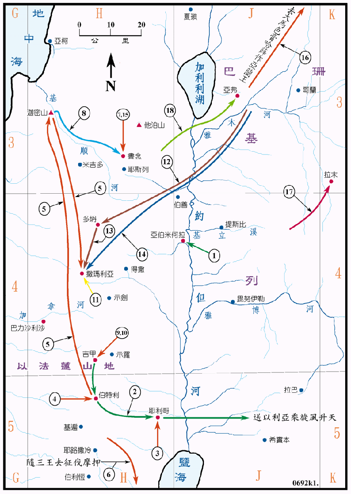

850～800BC

行动线说明
| 序号 | 圣经 | 说明 |
|---|---|---|
| 1 | 王上19:19-21 | 先知以利亚召以利沙作他的门徒，接续他的工作。 |
| 2 | 王下2:1-14 | 以利沙送以利亚自吉甲经伯特利、耶利哥、过约但河，见以利亚乘旋风升天后再回耶利哥。 |
| 3 | 王下2:19-22 | 以利沙治好耶利哥的恶劣水质。 |
| 4 | 王下2:23-24 | 以利沙在伯特利被讥笑是秃头。 |
| 5 | 王下2:25 | 以利沙从伯特利上迦密山，又从迦密山回到撒玛利亚。 |
| 6 | 王下3:4-27 | 以色列王约兰请犹大王和以东王一同攻打摩押，在旷野缺水，以利沙令他们挖沟，就得了水，又打败了摩押 (参看王上图08)。 |
| 王下4:1-7 | 以利沙供应油给一个先知门徒的寡妇和儿子。 | |
| 7 | 王下4:8-17 | 以利沙使书念的妇人得子。 |
| 8 | 王下4:18-37 | 这孩子后来生病死了，他母亲到迦密山去求以利沙，孩子就被以利沙救活了 。 |
| 9 | 王下4:38-41 | 以利沙在吉甲解了先知门徒因喝野菜汤所中的毒。 |
| 10 | 王下4:42-44 | 以利沙又使二十个饼给一百个人吃饱还有馀。 |
| 11 | 王下5 章 | 亚兰王的元帅乃缦得了大麻疯，到撒玛利亚求以利沙医治，得到痊愈。 |
| 王下6:1-7 | 以利沙使门徒伐木时沉入河底的斧头浮上来。 | |
| 12 | 王下6:8-15 | 亚兰王攻打以色列的计划常被以利沙破坏，就派大军到多坍去捉拿以利 沙。 |
| 13 | 王下6:16-23 | 以利沙使亚兰王的军兵眼目昏迷，竟跟随着以利沙走到了撒玛利亚，亚兰人因此惊恐惧怕，就撤兵回去，不敢再犯以色列了。 |
| 14 | 王下6:24-7:20 | 亚兰王便哈达上来围困撒玛利亚，城内在已绝粮之时，以利沙预言亚兰人次日必溃退，结果果然神使亚兰人逃跑，解了撒玛利亚的围。 |
| 15 | 王下8:1-6 | 以利沙令书念的妇人逃往非利士住了七年，回来后以利沙又向王索回他被占的产业。 |
| 16 | 王下8:7-15 | 以利沙到大马色预言亚兰王必病死，又预言哈薛作亚兰王。结果哈薛篡了位，作了亚兰的王。 |
| 17 | 王下9:1-10 | 以利沙令一个门徒到基列拉末去，膏耶户作以色列王。 |
| 18 | 王下13:14-19 | 以利沙死前对以色列王约阿施预言说，他必可在亚弗打败亚兰三次。 |
| 王下13:20 | 以利沙去世。 |
以利沙是北国的先知，他从 850BC 起开始事奉，直到 800BC，共有五十年，计经历约兰、耶户和约哈斯三个王。他的职事是要见证耶和华的能力，可以供应个人及国家，万事都在他的手中，他关怀属他的人民。他的工作对象范围很广，包括有南国、北国、以东和亚兰，他曾医治亚兰的元帅乃缦，他曾多次破坏亚兰攻击以色列的军事行动，当他到大马色去工作的时候，被视为是神人，亚兰王便哈达备了四十只骆驼的重礼，他仆人哈薛去求问他的病，先知却膏了哈薛作亚兰王，他又膏了耶户作以色列王，他又在吉甲和伯特利训练先知，他在去世前预言色列王约阿斯可打败亚兰三次，结果也应验了。